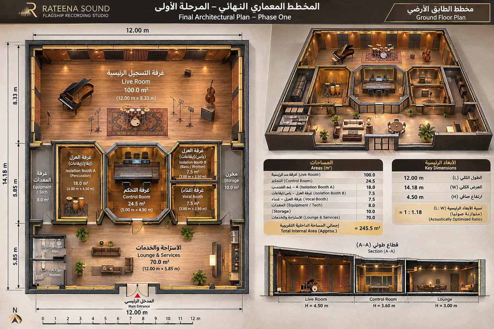

Phase 1 · Technical study
Framing the flagship
A technical study for decision-makers: what “world-class and complete” actually requires — starting with the flagship suite in Cairo, room by room.
Stage 0 · Framing
Assumptions before the rooms
Written for decision-makers who are intelligent and commercially serious, but who may not live inside recording studios every day — and for working engineers who have never built a facility at this scale.
It is a technical study, not a feasibility or business plan. It does not argue whether the centre will make money. It answers a narrower question: what “world-class and complete” actually requires in rooms, isolation, acoustics, infrastructure, equipment classes, and working methods — flagship in full detail; the rest of the facility at outline level only.
Not a logo on the door. A visiting artist or producer who has worked in London, Los Angeles, New York or Paris walks in and finds nothing to apologise for — not the street under a whispered vocal, not speakers that flatter, not a headphone feed that crackles at two in the morning.
With the doors shut and nobody playing, you should hear almost nothing: not the road, not the lift, not the air-conditioning. A quiet vocal, a solo oud or a Quran recitation needs a black background, not a grey one.
The speakers in the control room (engineers call them monitors) must tell the truth. If the low end sounds right here, it should sound right in a car on the Ring Road, on earbuds in a Dubai hotel, and in a cinema in Paris.
Musicians should enjoy playing in it. Strings should bloom and drums should feel big — but what the microphones capture must still be controllable later. Pretty and honest are not opposites; both simply take more space and more design.
Every input, every headphone feed, every patch point works, every day. Sessions at this level run on tight clocks. A string section booked for a morning cannot sit waiting while someone hunts for a faulty cable.
Artists spend twelve-hour days here. They need somewhere to rest, eat, take a call and think — away from the public and away from cameras. Great studios are remembered as much for how they made people feel as for their microphone cupboards.
Abbey Road, Capitol, AIR and Electric Lady are useful benchmarks — not to copy, but because the people we most want to attract carry those rooms in their heads. Aim: a producer who knows those rooms should leave Cairo without an asterisk next to the session.
Whatever you need for sound, you find it here: global and Arabic pop stars, emerging artists, mahraganat and rap, film Foley, Quran reciters, news and documentary voice — one roof, one technical standard.
Foley, for readers outside film, is the craft of performing everyday sounds (footsteps, clothing rustle, a door, a cup on a table) in time with the picture, so a soundtrack feels physically real.
| Facility | Rooms | What it is for | Phase 1 |
|---|---|---|---|
| Flagship studio | 1 | The reputation room: pop and Arabic pop, orchestral and ensemble section tracking, film scoring | Full detail |
| Rehearsal hall | 1 | Large, instrument-equipped hall for rehearsal and show preparation, recordable through its own studio | Outline |
| Foley & effects | 1 | Performing and recording sound effects in sync with picture for film, television and online drama | Outline |
| Voice / Quran | 2 | Recitation, voiceover, news and documentary narration, dubbing and audiobooks | Outline |
| Music studios | 3 | Day-to-day production: vocals, overdubs, emerging artists, mahraganat and rap, editing and mixing | Outline |
The flagship sets the bar. Decisions there — isolation, air-conditioning noise, clean power, cabling, signal paths — become the house standard. The other rooms inherit those standards at their own scale.
Deliberately flexible — designed to earn its keep across three kinds of work:
A band tracking together, vocals, live players alongside programmed parts. Loud, dense and bass-heavy, with artists who expect speed.
A string or brass section, or an oriental ensemble (qanun, oud, nay, violins and percussion) with the sound of a real room around them.
Musicians recording in time with picture, with the composer — and often the director — in the control room, hearing the score against the scene.
The site is the client’s decision. We do not find land or choose the building. We specify what the building must provide — and offer siting guidance, because in Cairo the wrong location can defeat the best studio design before the first wall goes up.
Cairo is loud, and more importantly it vibrates. Airborne noise (horns, voices) can be stopped with mass and sealed construction. Low-frequency rumble travelling through the ground is far harder — the easiest fix is simply not to be next to it.
Mixing technical design with money too early almost always trims the silence before anyone understands what it is worth. Agree first on what world-class requires; then have the budget conversation with that picture on the table.
Every term is explained in plain English the first time it appears. Where we choose one approach over another, we say why — so the investor can challenge us intelligently rather than rubber-stamp jargon. Practitioner voice, not brochure.
Stage 1 · Space and room programme
How big, and why size is not vanity.
The first shock of a true flagship is the volume of air. Small rooms can sound charming; they almost never sound unarguable.
Figures above are the current programme. The eight sound cards below keep their original fixed reference rooms (6.0 × 5.0 × 2.7 m against 10.0 × 9.5 × 5.2 m, with a 60 m² alternative) so their audio and calculations are unchanged; they illustrate the principle, not the current room.
RATEENA SOUND, first floor (upper level): a solid, open-top cutaway at true metric scale. Rotate, tilt, pan and zoom down to the furniture. Tap or hover over a room for its size. Every room here is Proposed.
Getting the sizes right is half the job. The other half is placing each room next to the right neighbours.
Figures above are the current programme. The sound cards below keep their original Stage 1 wording and reference sizes; the current design brief and true-scale plan follow them.
Current programme · owner update, 11 November 2026
The reasoning behind the flagship’s current room programme. Every figure is provisional and carries its evidence status: Proposed, Calculated, Simulated, Measured or Verified. Nothing here has been simulated, measured or verified yet.
| Room | Net target | Reference envelope | Clear height | Basis |
|---|
One drawing unit = one metre. Rooms are drawn at their real relative sizes, not shrunk to fit. Proposed spatial study, not an approved footprint.

Net usable floor area of each room. Select a space to read why it is sized this way. Iso C is strongly preferred.
Stage 2 · Atelier
Six plates on how sound is stopped — and where it still sneaks through. Plain English for investors, not acousticians.
Construction model · Main Live Room proportions
Three stages, one fixed view, drawn to the live room’s current proportions. Mass, decoupling, damping and floating construction are complementary techniques inside one Room-in-Room design, not competing grades.
Stage 3 · Acoustics
Isolation keeps the world out. Treatment decides how the room itself sounds: through absorption, diffusion and controlled reflection. It does not stop sound leaving the room.
Interactive · illustrative
Drag to orbit · scroll or pinch to zoom
This browser could not start 3D graphics (WebGL). The calculated values on the right still apply.
Room dimensions influence the modal frequencies, but no rectangular room can eliminate all standing waves. Dimensions only spread them more evenly; treatment and bass trapping manage the rest.
Illustrative – axial modes only, rectangular room, rigid boundaries fn = n·c / 2d, c = 343 m/s; p(x) = cos(nπx/d). Pattern strength is a second-order resonance response with Q = 8, an illustrative assumption. Wavefronts are spaced at the calculated wavelength but move slower than real sound. Calculated frequencies and positions.